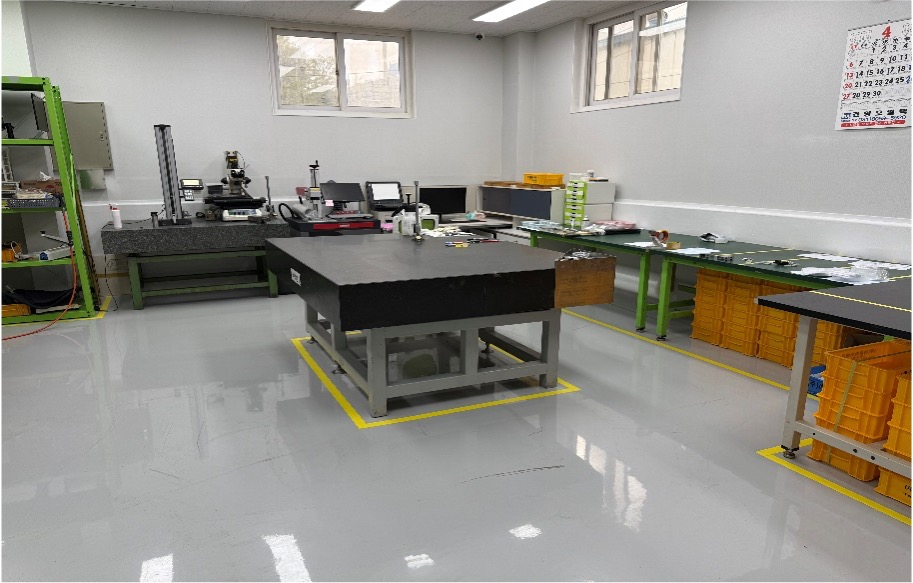

ROOM 01 · 3D MEASUREMENT
3차원 측정실
가공 공간과 분리된 15평 규모의 측정실에서 덕인 3차원 측정기를 운용합니다. 제품 측정용 도면을 기준으로 치수와 형상을 확인합니다.
측정 영역700 × 800 × 500
측정실 면적15평
검사 기준제품 측정용 도면

ROOM 02 · INSPECTION & PACKING
측정 및 포장실
Micro Hite Gauge와 현미경을 사용해 제품 특성과 측정 항목에 맞는 검사를 진행하고, 확인을 마친 제품을 포장합니다.
측정 장비 현황
보유 장비 목록
장비규격수량 / 제조사
정반1,500 × 2,0001 ea · MICRO MI TECH
Micro Hite Gauge600 mm2 ea · TESA
MicroscopeMF-A1720H1 ea · MITUTOYO
Gage Block103-22 ea · MITUTOYO
Dial Indicator1㎛ / 2㎛ / 0.01㎜25 ea · MITUTOYO
Dial Bore Gauge50–100 mm3 ea · MITUTOYO
Micrometer0–175 mm15 ea · MITUTOYO
Digimatic Caliper300 mm2 ea · MITUTOYO
현미경SZ301 ea · OLYMPUS
3차원 측정기700 × 800 × 5001 ea · 덕인